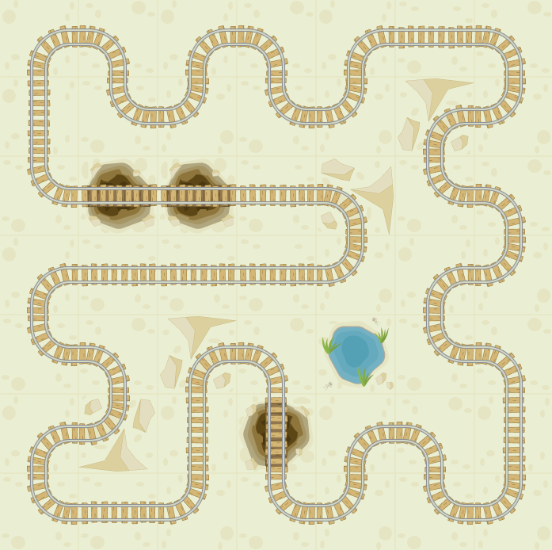

Nekeresdországban Nevenincs király szeretne egy körvasutat építeni, amely bejárja a birodalmának minden szegletét. A feladat megvalósítása Furfangra, az udvari tanácsosra vár, akinek a munkáját nehezíti a királyság változatos tája. Segítsünk Furfangnak megtervezni a királyság vasúthálózatához tartozó térképet!
|
ÚTVONALTERVEZŐ: ELTELT IDŐ: 00:00 |
Sikeresen megépítetted a vasutat. Nekeresdország büszke rád!
Eltelt idő: 00:00